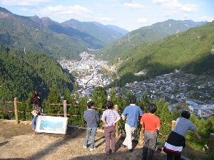
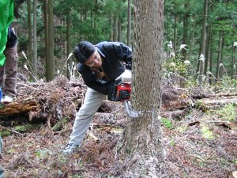

水窪ツアー | 2004年11月 |
|---|---|
| 昨年に続き、静岡の秘境とも言える水窪へ宴会＆きこりツアーに出かけました。 秘境とは言い過ぎで、水窪は普通の山間の町で、普通に皆さんが生活していて、普通に家が建っています。決して藁葺き屋根の家が点在していたり、庭で牛を飼っているような風景はありません。ただ、静岡市から車で3時間半かかるくらいでしょうか。下道で。電車で行くと4時間半くらいかかると思います。確実に東京より遠いです。 水窪の良い所は、実にアットホーム！町全体で歓迎してくれるような暖かさが有ります。もちろん、今回もツアーコンダクターを務める”じゅんじゅん”（以下Ｊとす）の成せる業もあるのですが。 と言う事で、今回はツアーコンダクターにＪを迎え、シュガー・シュガー友・アル兄・かむい・べっしーで、土曜のみ のび太・ぞう の以上8名で一泊の水窪ツアースタートです。 着いた土曜日に田舎ランチ。手作りコンニャクやジャガイモの煮っ転がし等の、普通の食堂ランチとは違う、水窪日常ランチです。サトイモの煮っ転がしは普通ですが、ジャガイモで煮っ転がしってあるんですね。オープンカフェの様に、川沿いでお食事。川の反対側を飯田線が通過していきます。 | |
|  高根城より水窪を見る |  高根城内。手前の建物は復元ではなく物置 |
| お腹が膨れたら少し運動しましょう！高根城跡を散策。高根城は通称三角山と呼ばれる山頂に立てられた城と言うより監視小屋の様な物で、１５世紀前半に築城されたらしい。水窪を南北に通る街道を監視及び国境警備が主だったようだ。現在は復元された物見台が山頂に建っています。景色が良く、さすが遠くまで見渡せます。 そして温泉！水窪のさらに秘境となる山王峡温泉しらかば荘。宿ですが日帰り温泉もやってます。内風呂のみで小さいけれど、総ひのき（だと思う）です。無色透明無臭でいい気持ちになりました。 「スーパーやまみち」でお買い物。ココでビールサーバーも借ります。去年はビールが足りなくなる事態が発生した為、今年は７Ｌのビール樽を2個の計14Ｌです。さすがに飲む人数が6名（内女性2名）しか居ないのに買い過ぎかと思いましたが、足りないよりマシでしょう。宴会場所は去年同様に、またＪ姉さん宅にお世話になりました。 | |
 やっぱ焼き肉と言えばビール！一番搾り！ |  気持良さそうですね〜 |
| 宴会のメインは焼肉！豚・猪・鹿・マトンと種類も豊富。おでんや、差し入れのキムチでテーブルの上は一杯です。慣れた手つきでＪがビールを注いで行きます。今回は早めに猪や鹿を焼きました。やっぱ美味しいぃ〜♪ キムチが辛くて美味しいぃ〜♪ ビールに合う合う〜♪ 途中に、なぜか国会議員の城内さんが登場。一通り名刺などを頂き、一杯やって行きました。同じ投票区で無い面々がそろっている為、選挙活動的には意味を成さないような気がしますが。いや〜Ｊの顔の広さには恐れ入ります。 カラオケをやりながら、結局夜中の１時過ぎまで宴会。知らぬ間にビール樽は2個とも空になっており、6人で14Ｌ制覇した模様。因みにシュガーのカクテルも有ったので、一体どの位飲んだ事やら。 次の朝、7時過ぎに雑魚寝状態の我々をＪが起こし朝食。酒が残っているのか皆調子悪そうで、起き切れていない様子。多少腹に詰め込んだら元気が出てきました。 今日の午前中は木こり体験。と言うか、里山つくりのお手伝い。現在ある杉林をある程度間伐し、木々の間に広葉樹を植えて、清らかな森を作ろう！というボランティア活動の一環にスポット参加。広葉樹は針葉樹より根が大きく張る為、土砂災害に強いとか水がキレイになるとか、かんとか説明を受け仕事開始。木々の間に転がる倒木を一箇所に集め、下場を整理。この時、各自チェーンソウを実際使ってみて、木を輪切りにしたりしました。そして代表して私べっしーが、一本の木を切る事となり、板橋師匠の指導を受けながら木に切り込みを入れていきます。狙った場所に倒すべく方向を見定め倒そうとするも、切り口が甘いのか中々倒れません。師匠が追い討ちを掛けるように切り、何とか倒しました。倒れた木は樹齢33年位。ちょうど我々と同じ位の年です。そう思うと、感慨深くなります。倒される木は、既に枝が無かったり、近くに成長を妨げる木が有ったり、途中から2本に分れ商品価値が無いものなどが選ばれるそうです。 | |
 チェーンソウで切り切り |  へっぴり腰です。 |
| 午前中の仕事が終わり豚汁を頂いたら、昼食を食べに「いしもと」へ向かいます。ココは雑穀料理を食べさせてもらえる所です。雑穀料理とは、米や麦等の主要穀物以外の穀物、アワやヒエといった物です。 普通の民家にしか見えない玄関をくぐり中に入ると、昔の民家そのままを使ったお店です。お店というより、自分の家そのまま？って感じですが、とてもキレイです。しかも広い。 本日は雑穀料理のフルコースなのか、皿に沢山盛られています。一通り説明を受けたものの覚えきれず、半分何を食べているか分かりませんが、美味しいです。アワやヒエを馬鹿に出来ません！ 現代の料理風にアレンジが加えられていて、私の中にあった”貧しいもの”と言うイメージは消えてなくなりました。春巻きのような物があったり、椎茸に詰め物がしてあり、食べると白身魚を思わせるような物があったりと、魚や肉を使っていないのにすごく豊かです。 今回のツアーはココで終了。皆満足して家路に着いた事と思います。 じゅんじゅん有難うございました！ 皆さん私だけ木を切って申し訳ない。けど念願が叶いました。 | |
 これが私が倒した木。枝を落としています。 |  これが雑穀料理？！ |
| 写真＆コメント by べっしー | |